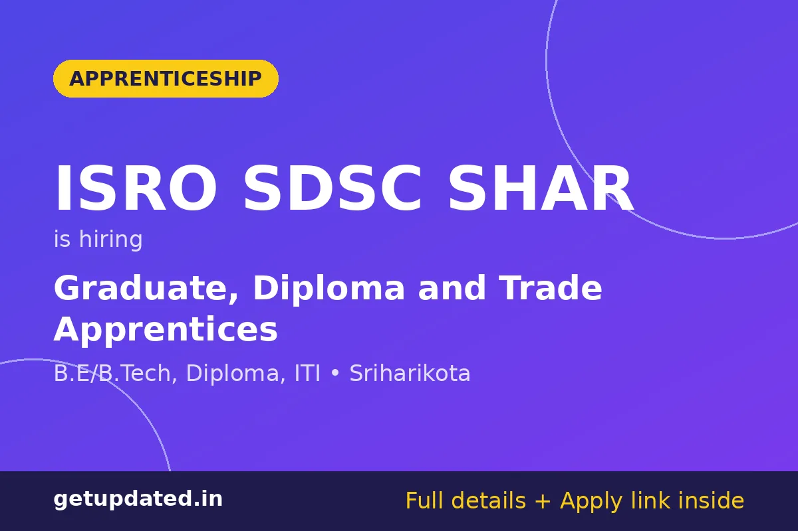

IOCL Eastern Region Apprentice Recruitment 2026 is open for Diploma engineers, ITI holders, graduates (BA, B.Com, B.Sc, BBA) and Class 12 pass candidates. The Marketing Division advertisement (IOCL/MKTG/ER/APPR/2026-27, dated 13 November 2026) announces 409 apprentice seats across West Bengal, Bihar, Odisha, Jharkhand, Assam and the North-Eastern states.
The last date is 12 December 2026, 5:00 PM. Selection is purely merit based on your qualifying marks. There is no written exam and no interview. You must complete two steps: apply on NAPS or NATS, and fill the mandatory IOCL Microsoft Form.
Note: the headline says 409 seats, but the state-wise tables printed in the advertisement add up to 393, according to job-site reports. Check the official notice for any corrigendum.
Table of Contents
- Quick Highlights
- About IOCL and the Apprenticeship
- Vacancy Details
- Eligibility Criteria
- Age Limit and Relaxation
- Important Dates
- Stipend and Application Fee
- Selection Process
- How to Apply
- Preparation and Document Checklist
- Common Mistakes to Avoid
- Official Links and Final Checklist
- Final Takeaway
- Also Read
- FAQs
Quick Highlights
| Particular | Details |
|---|---|
| Organisation | Indian Oil Corporation Limited (Marketing Division), Eastern Region |
| Posts | Technician Apprentice, ITI Trade Apprentice, Graduate Apprentice, Data Entry Operator (DEO) Apprentice |
| Vacancies | 409 announced (393 in state-wise tables) |
| Age | 18 to 24 years as on 30 November 2026 (relaxation for reserved categories) |
| Training period | 12 months |
| Selection | Merit list, document verification, medical test |
| Fee | No application fee prescribed |
| Last date | 12 December 2026, 5:00 PM |
About IOCL and the Apprenticeship
Indian Oil Corporation Limited is India's largest oil refining and marketing company and a central public sector enterprise. Its Marketing Division runs terminals, depots, LPG plants, aviation fuel stations and sales offices across the country. The Eastern Region covers the east and north-east, and apprentices are trained at these field locations.
An apprenticeship is training under the Apprentices Act, not a regular job. You learn on the job, receive a monthly stipend and earn a certificate that helps in future recruitment. The advertisement is clear that completing the training does not guarantee employment at IOCL.
Vacancy Details
The state-wise seats listed in the advertisement (as reported by FreeJobAlert) are below. West Bengal and Assam have the most seats.
| Category | Seats listed | Discipline codes |
|---|---|---|
| Technician Apprentice (Diploma) | 206 | 101-106: Mechanical, Electrical, Instrumentation, Civil, Electrical & Electronics, Electronics |
| ITI Trade Apprentice | 97 | 107-111: Fitter, Electrician, Electronics Mechanic, Instrument Mechanic, Machinist |
| Graduate Apprentice | 70 | 112: BA, B.Com, B.Sc, BBA |
| DEO Apprentice | 20 | 113 (fresher), 114 (skill certificate holder) |
| State / UT | Total seats listed |
|---|---|
| West Bengal | 149 |
| Assam | 73 |
| Bihar | 65 |
| Odisha | 58 |
| Jharkhand | 26 |
| Other NE states, Sikkim, Andaman & Nicobar | 22 combined |
Apply for only one discipline code. Applying under more than one leads to rejection.

Eligibility Criteria
- Technician (101-106): regular, full-time 3-year Engineering Diploma in the relevant discipline.
- ITI Trade (107-111): Matriculation plus a regular, full-time 2-year ITI in the trade, recognised by NCVT or SCVT.
- Graduate (112): regular, full-time BA, B.Com, B.Sc or BBA.
- DEO (113/114): Class 12 pass, below graduate level. Code 114 also needs a recognised DEO skill certificate.
- Minimum marks: 50% for General/EWS/OBC-NCL; 45% for eligible SC/ST/PwBD candidates.
- Qualifying period: Technician and Graduate: passed between 1 April 2023 and 30 November 2026. ITI and DEO: 1 April 2022 to 30 November 2026.
Who is not eligible
Part-time, correspondence or distance-learning qualifications are not accepted. Holders of, or students pursuing, B.E./B.Tech, MBA, MCA, CA, ICWA, LLB or equivalent are not eligible. A candidate may have done at most two earlier apprenticeships, and the second cannot be in the same trade.
Age Limit and Relaxation
The age range is 18 to 24 years as on 30 November 2026. Relaxation: SC/ST 5 years, OBC-NCL 3 years, PwBD (UR) 10 years, PwBD (OBC-NCL) 13 years, PwBD (SC/ST) 15 years. Reports also say PwBD candidates are not eligible for the technician and ITI codes 101-111, so read the notice if this applies to you.
Important Dates
| Event | Date |
|---|---|
| Notification | 13 November 2026 |
| Applications start | 13 November 2026, 10:00 AM |
| Last date (NAPS/NATS and Microsoft Form) | 12 December 2026, 5:00 PM |
| Document verification | To be intimated by email |
| Joining | To be notified |
Apply early
Both the portal application and the Microsoft Form must be done before 12 December. Portals get slow near the deadline, so finish at least a few days earlier.
Stipend and Application Fee
The advertisement does not state a fixed stipend amount. It says the stipend will be paid as per the Apprentices Act and Rules. Check the official notice for any figure before you plan around it.
The advertisement does not prescribe any application fee. Do not pay anyone claiming to "confirm" your seat.
Selection Process
- Registration and application on NAPS or NATS.
- Mandatory IOCL Microsoft Form.
- Merit list based on the percentage in your essential qualification.
- Shortlisting as per merit and available seats.
- Document verification (call by email).
- Pre-engagement medical fitness check.
There is no written test or interview, so your marks decide everything. A higher percentage in your diploma, ITI or degree directly improves your chance, which is why accurate marks entry matters.

How to Apply
- Read the official notification through the Official Links section below.
- Pick your discipline code (101 to 114) and keep your marksheets ready.
- Register on the right portal. ITI and DEO: NAPS (apprenticeshipindia.gov.in), establishment ID E05201900011. Technician and Graduate: NATS (nats.education.gov.in), establishment ID EWBKOC000077.
- Search for Indian Oil Corporation Limited (Marketing Division), Eastern Region, using the ID, and apply for your discipline.
- Fill the mandatory IOCL Microsoft Form, giving three preferred training or verification locations.
- Submit both before the deadline and save the confirmations.
Do not skip the form
Candidates who skip the Microsoft Form may not get a document verification call letter, even if their portal application is complete.
Preparation and Document Checklist
Since selection is merit based, preparation means getting your paperwork right. Keep these ready: Class 10 certificate for date of birth, diploma/ITI/degree marksheets and passing certificate, category certificate if applicable, Aadhaar, a passport photo, signature, and an active email and phone number.
Make sure your profile on NATS or NAPS is fully filled and Aadhaar-verified. Match your name and date of birth exactly with your certificates. Mismatches are a common reason for rejection at document verification.
Common Mistakes to Avoid
- Applying under more than one discipline code.
- Using the wrong portal (NAPS vs NATS) for your qualification.
- Forgetting the Microsoft Form.
- Applying with a part-time or distance qualification.
- Entering wrong percentage or passing year.
- Ignoring emails, since document verification is intimated by email.
Official Links and Final Checklist
- IOCL Apprenticeships (notification and details)
- NATS portal (Technician and Graduate)
- NAPS portal (ITI and DEO)
Final checklist: correct code chosen, portal application done, Microsoft Form submitted, documents scanned, confirmations saved, email checked regularly.
Final Takeaway
This is a useful opportunity for diploma holders, ITI pass-outs and non-engineering graduates to get a year of training at a Maharatna PSU, with no exam and no fee. The deadline is 12 December 2026. Complete both the portal application and the Microsoft Form, and confirm the final seat count and stipend from the official notice.
Also Read

GE HealthCare Hiring Graduate Engineer Trainee (Ultrasound and PCS) in Bengaluru 2026
Read now →
F13 Technologies Hiring AWS Cloud Intern 2026: 3-Month Remote Internship for Freshers
Read now →
Exim Bank Management Trainee Recruitment 2026: Apply Online by 11 December
Read now →
ISRO SDSC SHAR Apprentice Recruitment 2026: 400 Posts for Graduate, Diploma and ITI Candidates
Read now →Browse all latest jobs & updates →
FAQs
1. What is the last date for IOCL Eastern Region apprentice 2026?
12 December 2026, 5:00 PM, for both the NAPS/NATS application and the Microsoft Form.
2. How many seats are there?
The advertisement announces 409 seats, though the state-wise tables reported add up to 393. Check the official notice for any corrigendum.
3. Is there any exam or interview?
No. Selection is by merit list based on percentage in the qualifying exam, followed by document verification and a medical test.
4. Who can apply for the Graduate Apprentice post?
Candidates with a regular full-time BA, B.Com, B.Sc or BBA, passed between 1 April 2023 and 30 November 2026, with at least 50% marks (45% for eligible reserved categories).
5. What is the age limit?
18 to 24 years as on 30 November 2026, with relaxation for SC/ST, OBC-NCL and PwBD.
6. Is there an application fee?
No fee is prescribed in the advertisement.
7. Where do I apply?
Technician and Graduate: NATS. ITI and DEO: NAPS. You must also fill the mandatory IOCL Microsoft Form.
8. What is the stipend?
No fixed amount is stated; it is paid as per the Apprentices Act and Rules for a 12-month training.